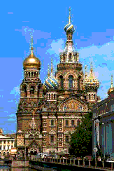
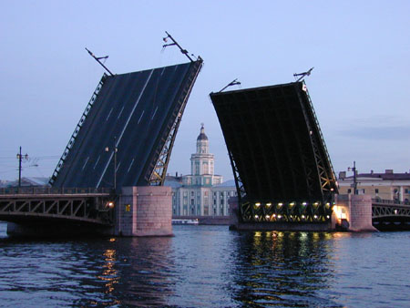

|
|
|
SAINT PETERSBURG - THE VENICE OF THE NORTH

Saint Petersburg (the former capital of Russia) with about 5 millions inhabitants is recognized
as one of the most beautiful cities in the world. Various guided tours over Saint Petersburg and suburbs
including visits to Tsars' palaces and museums will be organized during both the Conference days and the weekend.
Saint Petersburg is known not only for its palaces and museums.
It is a historical scientific center of Russia, where the 1st Russian University and Russian Academy
of Sciences were founded in 1724. Among first professors of Saint Petersburg University were Leonhard Euler
(who lived in Saint Petersburg for 30 years and wrote about 500 of his 865 papers there)
and Daniil Bernoulli. In addition to sightseeing tours we are planning to organize historical
scientific tours including visits to historical buildings of Saint Petersburg University and Russian
Academy of Sciences. You will have unique possibility to see houses
where L. Euler, P. Chebyshev, A.M. Lyapunov, A.A. Markov, S. Kovalevskaya lived and worked,
as well as the L. Euler's tomb.
In May-July when the
White Nights
are with us, the city shows its special charm.
This is the time when guests and citizens are fascinated with magnificent architectonics ensembles of palaces
and temples, the streets and the squares, granite embankments and raising bridges across the Neva River
and its tributaries.
Wnenever you visit Saint Petersburg, you will never get tired of admiring the unique
architecture of regular and landscape
gardens and parks, out-of-town palaces of
Pushkin,
Pavlovsk,
Peterhof,
Gatchina, and
Lomonosov (Oranienbaum).
So make your plans to stay over the weekend. Enjoy beauties of magnificient Saint Petersburg
History
The city was always in the high road of Russian history - during two centuries it was the Capital
of the Russian State. Now the city won a good name as a Culture Capital of Russia and plays an essential
part in Russian scientific life. Saint Petersburg is a historical scientific center of Russia, where the
1st Russian University and Russian Academy of Sciences were founded 275 years ago.
Saint Petersburg was founded by Russian Tsar
Peter the Great
(Peter I, 1689-1725 years of governing) during the Northern War of Russia with Sweden.
May 16 1703 is seemed to be the date of Saint Petersburg foundation.
The famous Peter and Paul fortress
(see livecam image: )
with the church in name Saints Peter and Paul was laid in the Zayachy Island on the delta of the Neva River.
After a year, in 1704, the first Russian sea fortress Kronstadt was constructed in the Finish Gulf.
In 1710 the Capital of Russia was transferred to Saint Petersburg from Moscow.
In 1914, during the First World War, the city was renamed into
Petrograd.
Because of the October Coup on November 1917 the political system in Russia was changed and
the mess in economy followed this event. A lot of national treasures were sold out or destroyed.
In 1924 Bolsheviks renamed the city into Leningrad.
The name of Saint Peter was given back to the city in 1991.
The Blokada
(the Siege) of Leningrad during the Great Patriotic War was the most tragic period for the city.
It lasted from September 1941 till January 1944, about 900 days and nights.
During the Blokada about a million of civilians died of hunger and were killed by bombs.
The monuments of history and culture and the suburban palace complexes were ruined.
The restoration
works started right after the war and are continuing nowadays. Despite of the tragic ages of its history,
Saint Petersburg was and remains one of the treasures of world art and architect.
Upon the decision of UNESCO Saint Petersburg has been recognized as a Monument of the World's Culture.
Sights
The Palace Square
is the most grandiose among the squares of the city. The facade of the
Winter Palace
with the famous Hermitage Museum
forms its nothern border. The semi-circular facade of the General Stuff and Ministries Building
is its southern border. The Alexander Column was erected in the center of the Square to commemorate
the victory over Napoleon in the war of 1812, and to honor Emperor Alexander I.
The building of Admiralty
faces the western border of the Palace Square.
The equestrian
monument of Peter the Great (also known as a Bronze Horsman) towers up in the center of the small
decorative garden. The facade of Senate and Synod buildings stretches along the whole
western border of the square. The magnificent
Saint Isaak's Cathedral
dominates over the surrounded buildings, linking the Senate (Decembrist) Square
with the Saint Isaak's Square. Peter I conceived the ensemble of the
Summer Garden
( 1704-30) as his residence. The Summer Palace of Peter I was designed in 1714 by D. Tresini.
This park is fenced by the well-known Summer Garden's Gates.
The Nevskiy Prospekt
is the main though fare of Saint Petersburg. It is 4.5 km long and 25-60 meter wide.
The Nevskiy Prospect appeared in 1710 as two roads in boggy forest leading from the Admiralty
and from the Alexander Nevskiy Monastery
to the Old Novgorod high road. There are a lot of points of interest along this avenue.
One of them is the famous Cathedral of the Icon of Our Lady of Kazan
(Kazan Cathedral)
by A. Voronikhin.
The Arts Square
with the State Russian Museum,
the world's largest museum of Russian art, is located just on the Nevskiy Prospekt.
Among the buildings along this avenue one can mark out the Anichkov Palace. (Some pictures of the Nevskiy Prospekt can be also found
here ).

Places of Interest
Below some famous places of interest
that participants may wish to visit are listed.
-
The Hermitage
-
One of the world's greatest museums, founded in 1764 and occupying
the buildings of the Winter Palace and Small, Old and New Hermitages.
The museum's collection numbers more than 3 million items - paintings,
graphic art, sculptures, applied art, coins, and archeological finds. The museum keeps 15 thousand paintings, 12 thousand sculptures, 600 thousand drawings and more then 4000 thousand of applied arts. Painting of such great masters as Leonard da Vinci, Titian,Raphael, Rembrandt, Rubens, Impressionists (van Gogh, Manet, Deggas, Monet,Renoir, Sezanne), Gauguin, Matiss, Picasso are in the ownership of the Hermitage. Hermitage is famous through its collection of Scythian golden articles.
-
Russian Museum
-
The largest museum of Russian art, opened in 1898. The museum owns the Russia bigest collection of paintings, scul[tures, drawings, items of applied anf folks arts. The exibitions show ancient icons and the collections of items of the 18th-20th centuries. It contains works by great Russian artists: A.Rublev, K. Brullov, O.Kiprensky, P.Fedotov,
I.Repin, I.Levitan, I.Aivazovsky and many others.
-
Savior on the Blood Church (Church of the Resurrection)
-
A monument of Russian architecture and decorative art of the late 19th
century. The church's unique decorations, both interior and exterior,
include icons and panels made from majolica and mosaic created by the
leading Russian artists of last century.
- Saint Isaac's Cathedral
-
One of the world's most beautiful churches. It was built between 1818 and 1858 to A.Montferrand's design and named in honor of Saint Issac of Dalmatia.
The cathedral is 101.5 meters high, and there is a wonderful view over
Saint Petersburg from the colonnade.
-
Kazan Cathedral
-
Built between 1801 and 1811 to house the miracle-working icon of Our Lady of Kazan. Regular exhibitions are held concerning Orthodox Church and ecclesiastical art.
-
Summer Garden
-
A masterpiece of Russian landscape art, the Summer Garden was laid out on Peter I's orders at the beginning of the 18th century. It contains
89 sculptures of Italian masters. The buildings in the garden are
Peter I's Summer Palace, the Coffee House, and the Tea House.
- Alexander Nevsky Monastery
-
Founded by Peter I in 1710, now it contains five churches in the monastery complex. The complex contains the city museum of decorative sculpture and the Saint Nicholas cemetery, where outstanding Saint Petersburg residents and cultural figures are buried, including Tchaikovsky, Petipa, Euler, and Dostoevsky.
-
Peter and Paul Fortress
-
Founded in 1703 to defend Saint Petersburg against enemy raids. The complex includes Peter and Paul Cathedral which is the city's tallest building (the height of the spire is 121.8 meters) and contains the burial vault
of Peter I and other Russian emperors, Museum of the History of Saint Petersburg, the house of the "grandfather of the Russian navy", where an exact copy of Peter I's little boat is kept, and the Old Mint.
-
Kunstkamera
-
Russia's first museum, founded in 1714 on Peter I's order. It contains household items, works of applied art and national costumes from Siberia, Asia, Africa, and North and South America. It includes exhibits collected by well-known Russian travelers and explorers.
-
Museum of Ethnography
- A unique collection which reflects the life and culture of the peoples of Russia: it consists mostly of examples of traditional costumes, embroidery,
fabrics and furs. The museum's reserves contain many rarities such as icons,
ritual costumes and masks.
-
Peter I's cabin
-
The first wooden building in Saint Petersburg, built in 1703 and still
surviving in its original form.
-
National Pushkin Museum
-
The great Russian poet's last home, from where he set off for his fateful
duel. The display includes Pushkin's personal belongings, as well as
manuscripts and other documents relating to his life.
-
Dostoevsky Literary and Memorial Museum
-
The display is arranged in the great Russian author's flat and is devoted
to his life and work.
-
Zoological Museum
-
The museum was created in1832 on the basis of the collection of Kuntzkamera. It holds the exibitions of over 15 million types of animals from every continent and climatic zone.
Suburbs
-
"Peterhof"
-
Peterhof is 30 kilometers to the West of Saint Petersburg. The palace and park complex with its unique array of fountains is considered to be one of the most beautiful in the world. The complex also includes the "Monplaisir"
and "Marly" Palaces and the Hermitage Pavilion.
-
"Pavlovsk"
-
Pavlovsk is 30 kilometers south of Saint Petersburg, and is a former residence of the Russian Tsars. The center of Pavlovsk is dominated by the "Bolshoi" Palace. The park is graced by pavilions and sculptures.
-
"Tsarskoye Selo"
-
Tsarskoye Selo is the suburban residence of the tsars located in a small town Pushkin (24 kilometers south of Saint Petersburg). Founded in 1725. On its grounds the Great Yekaterininsky Palace, the Aleksandrovsky Palace, the Hermitage, Lycee, and Cameron gallery are
located. The gardens and park magnificently combine baroque and 18th century classicism.
|
|